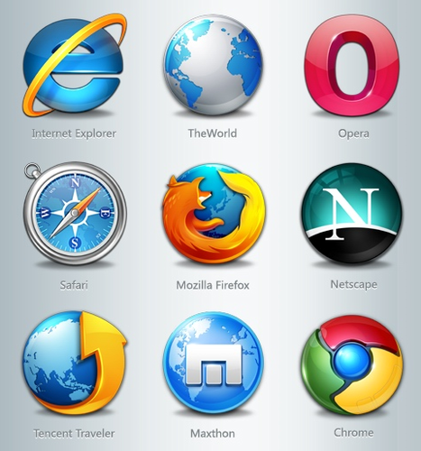

Internet, Society and Design Justice?
By Diane Bada | 3 June, 2022

Web, Society, and Design Justice
Our political, financial, social, and social associations have all been impacted by innovative progressions. We shape the web through how we draw in with it, and the web, thus, impacts our surroundings. Since it has joins with advances and the media, the data we get on the web then, at that point, controls our everyday activities and our thought process (Orgad, 2007:34). I'll be investigating the positive and negative perspectives brought around by the web inside our general public, as well as characterizing Design Justice and what it involves.
The Internet is an overall organization that works with remote associations and correspondences.
Individuals can get to any data they want from governmental issues, scholastics, medical services, etc through the Internet, a worldwide organization that is liable for remote associations and interchanges. This data is effectively open by going on the web, which incorporates interfacing with the web and perusing and looking for data on the Web, utilizing PCs or phones.
"Society" alludes to a gathering (local area) who share normal convictions, customs, chronicles, interests, societies, and political power.
How has the web influenced us as a general public?
It's no untruth that the web has truly worked on a few parts of our lives, for example, the capacity to perform exercises in the solace of your own bed. The technique for sharing the news at a more extensive level and quicker way. Likewise, the web has additionally given individuals more admittance to data in a few fields like the scholarly world, business, and society. My main thing is having the option to message my sister, who consumes the room nearby, to get me something from her room. It's way better compared to shouting across the house and harming my vocal cords.
Be that as it may, with each great, there is terrible. Since the web is such a huge space that incorporates individuals' very own subtleties, it has expanded the quantity of crooks on the web. Many tricks happen consistently in light of the fact that individuals are dependably on the web. Some of them are truly hidden and you won't find out right away, however others are fast, for instance getting the subtleties from your credit or check cards and utilizing them to buy something. In addition to the fact that it is a spot for hoodlums, yet in addition a spot for menaces and judgemental people. It's no news that a great deal of suicides that have happened connecting with youngsters, are expected to digital harassing. The web is an unsafe spot, particularly when one cooperates with people who set off to hurt others. Moreover, the misrepresentation and the tormenting, "the web is a trick", is an expression very much utilized by the twenty to thirty year olds today. This expression comes from the way that not all that is displayed on the web is valid. This comes from online entertainment stages that show individuals partaking in their sumptuous day to day routines and experiencing in gold. It's intriguing how, when the web is taken from them, they aren't actually who they see themselves to be.
Design Justice for the Web
While moving toward this word, I broke into attempt to translate what this could mean corresponding to the web.
Configuration typically manages arranging an idea for something. As far as the web, this can be for planning the wireframes, introductions and so on.
Justice, in my mind, likens with fairness. Joined with design, implies arranging out the various parts of a product, for this situation, the web, to accomplish an item reasonable for a wide range of individuals, no matter what the drawbacks people could confront. The impeded gathering would be, gatherings under the imbalances achieved by colonialism and capitlism. Design justice takes into consideration individuals' voices to be heard and deteriorates injustice, inclination, and judgment (Costanza-Chock, 2020:19).
Applying this idea to the Internet, I consider the reading, "Towards a study of Information geographies", and contemplate all the unrepresented nations with regards to the web. Design Justice can be a voice for these nations, remembering them for the plan cycle and causing them to feel as though they are a piece of the globe, by remembering them for dialects, content connected with them, and that's only the tip of the iceberg.
References
COSTANZA-CHOCK, S. 2020. Plan Justice: Community-Led Practices to Build the World We Need. London: The MIT Press.
ORGAD, S. 2007. The Internet as an ethical space: the tradition of Roger Silverstone. New media and Society 19(1): pp.33-41.